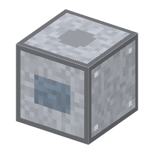

説明
①子ども 羽根車をものすごい速さで回して、空気の分子をはじき出すポンプ。油も水銀も使わない、きれいな真空。
②学生 アルミ×6＋鋼×2＋モーター。電気 300W。隣に真空容器と回っている回転ポンプ（前段）、容器が 10Pa 以下、精密な玉軸受（段階2以上、玉軸受で右クリック）がそろうと 10⁻⁶Pa まで引ける。
③大人 1958年、ドイツのファイファー社のベッカーがタービン型の分子ポンプを発表した（祖先は 1913年ゲーデの分子ポンプ）。毎分数万回転の羽根を支える精密な玉軸受があって初めて作れた。
④ガチ 羽根の先が分子の速さ（数百m/s）に近い速さで回り、分子を下へはじく。拡散ポンプの油や水銀の蒸気が戻って膜を汚す心配がないので、半導体の装置の真空はほとんどターボ分子ポンプになった。